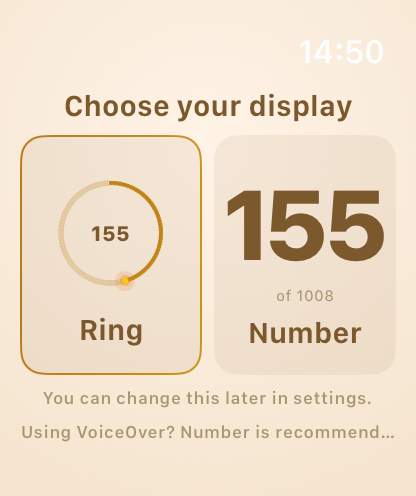
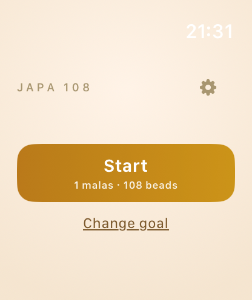
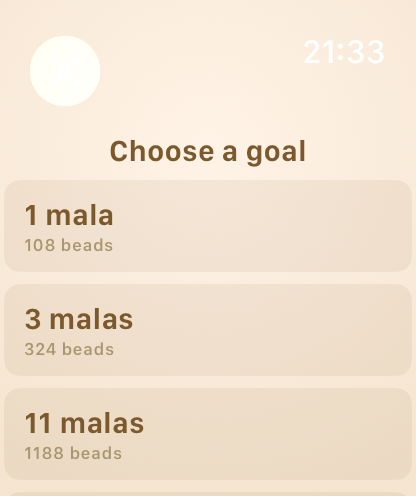
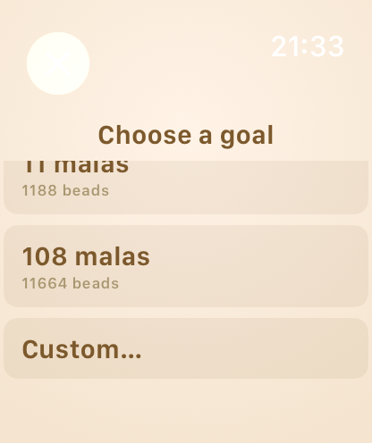
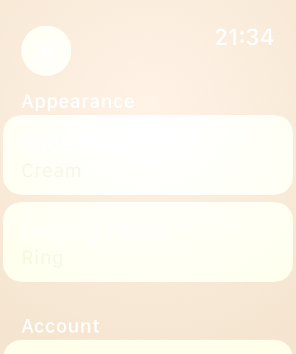

Choose your display (first run)
Pick Ring (circular progress) or Number (large digit). Remembered per-user. Post bead-count refactor shows "of 1008".
Current · 2026-04-21
Home — ready to start
Saffron Start button with current goal subtitle. Gear icon opens Settings. "Change goal" link jumps to the picker.
Sprint 2 · 2026-04-20
Goal picker — presets
Quick-pick goals. Pre-refactor snapshot showed "mala" terminology; current build uses "11 / 54 / 108 / 1008 / 10008 beads" with subtitles like "Half mala", "Mahā count".
Sprint 2 · 2026-04-20
Goal picker — Custom
Scroll to reveal higher counts and a Custom entry (typed target). "Mahā count" preset at 10 008 beads for serious practitioners.
Sprint 2 · 2026-04-20
Settings — before the contrast fix
This capture shows the original Form/Picker implementation where selected rows render near-invisible on the cream face. Commit f3f8723 replaced this with explicit tinted segment buttons (saffron-on-cream).
What changed after these screenshots
Bead refactor (5853c95) — goal semantics switched from malas to beads end-to-end. Presets are now [11, 54, 108, 1008, 10008] beads with human subtitles. All "MALA X OF Y" text replaced with "BEADS · 108 of 1008". Pre-refactor mala values (1, 3, 11) migrate to 108.
UX fixes (f3f8723) — three watchOS-specific regressions resolved. (1) engine.start() now accepts .discarded as a valid entry state, not just .idle. (2) .sheet presentations replaced with NavigationStack pushes to skip the system clock + X overlay that was invisible on cream. (3) Settings picker rebuilt as tinted segment buttons (no more white-on-cream selected value).
New app icon (5853c95) — swapped the template watch icon for the saffron-gradient mala-bead artwork from the legacy iOS target. Seven watchOS sizes auto-generated via sips.